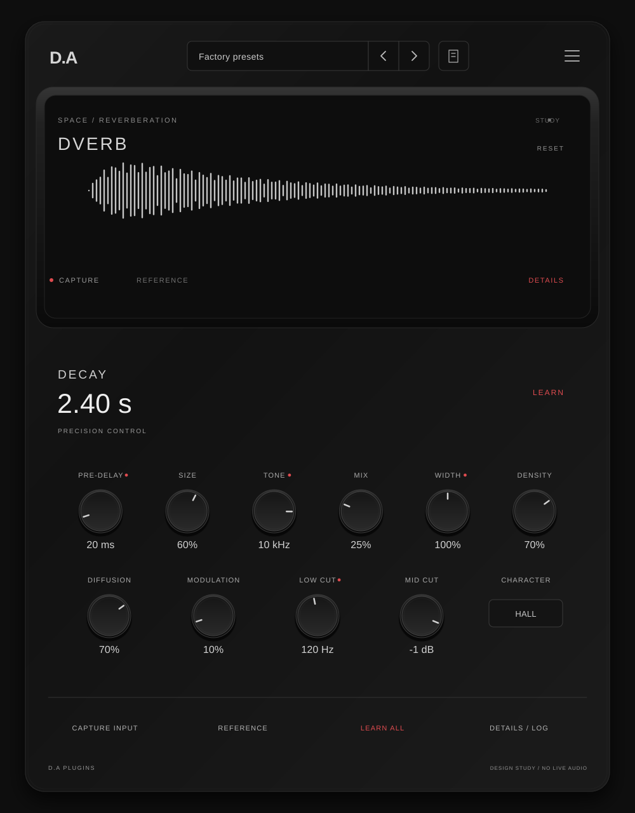
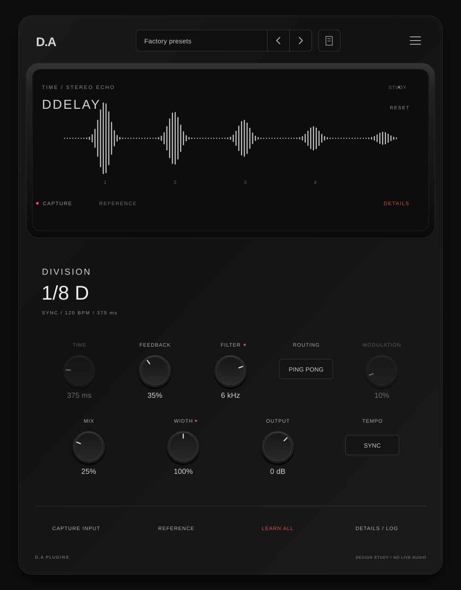
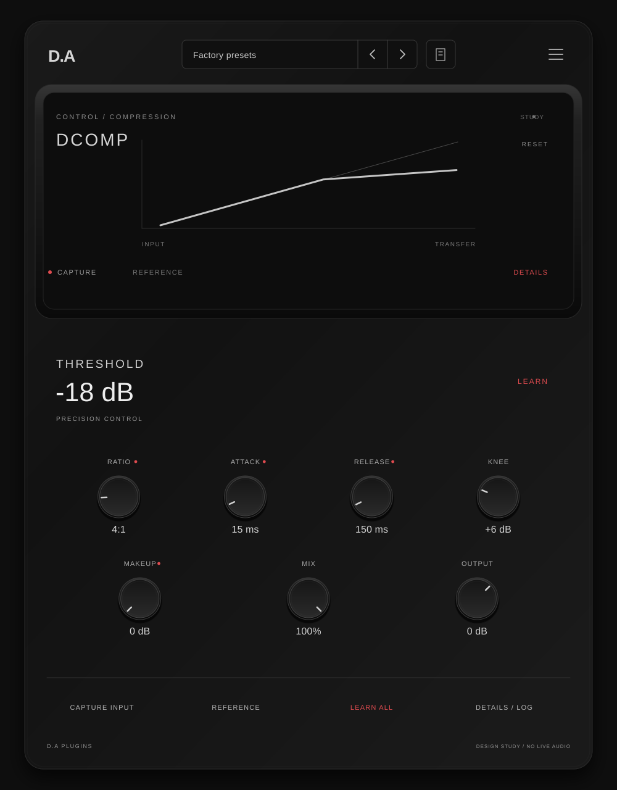
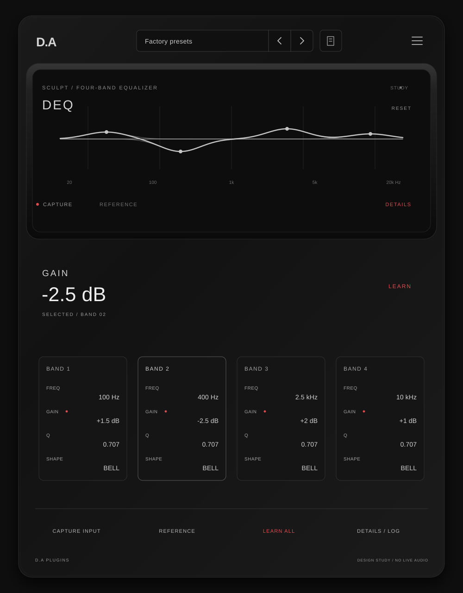
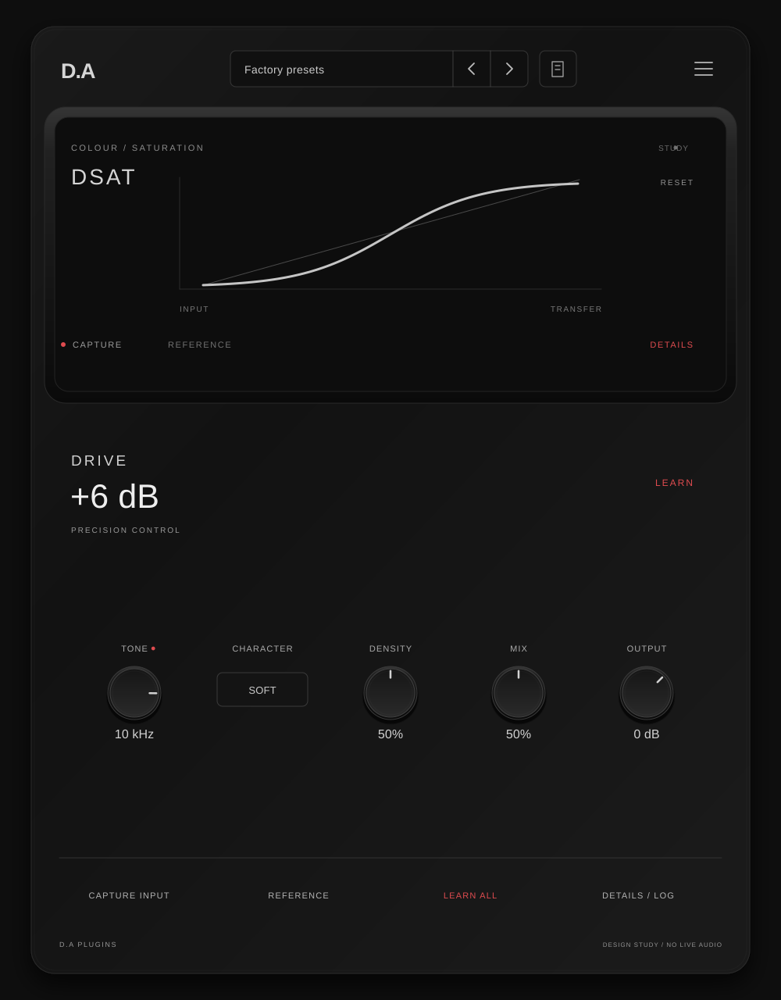
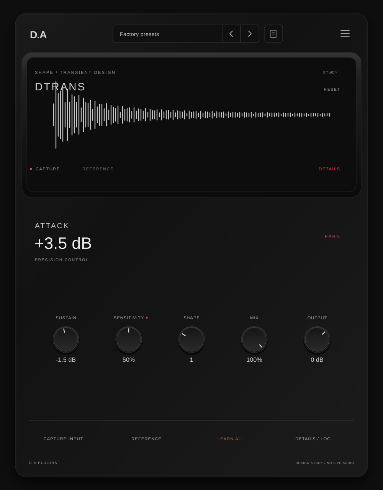
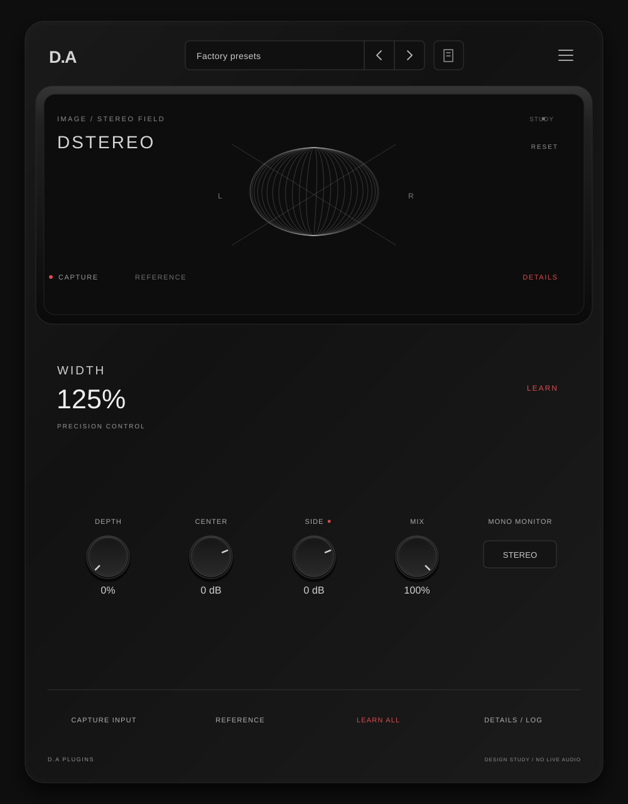
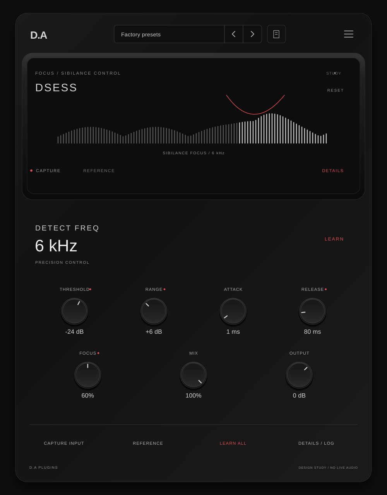
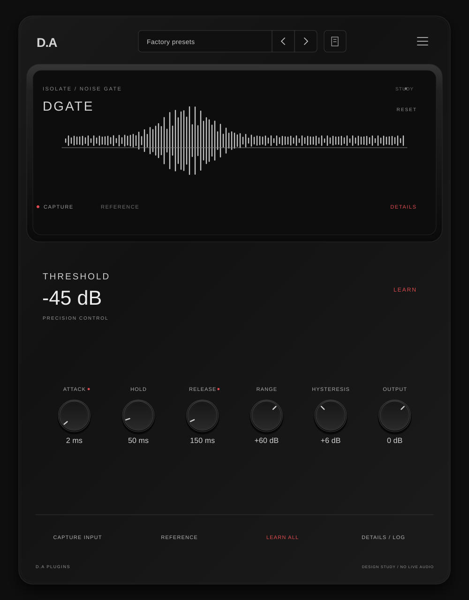
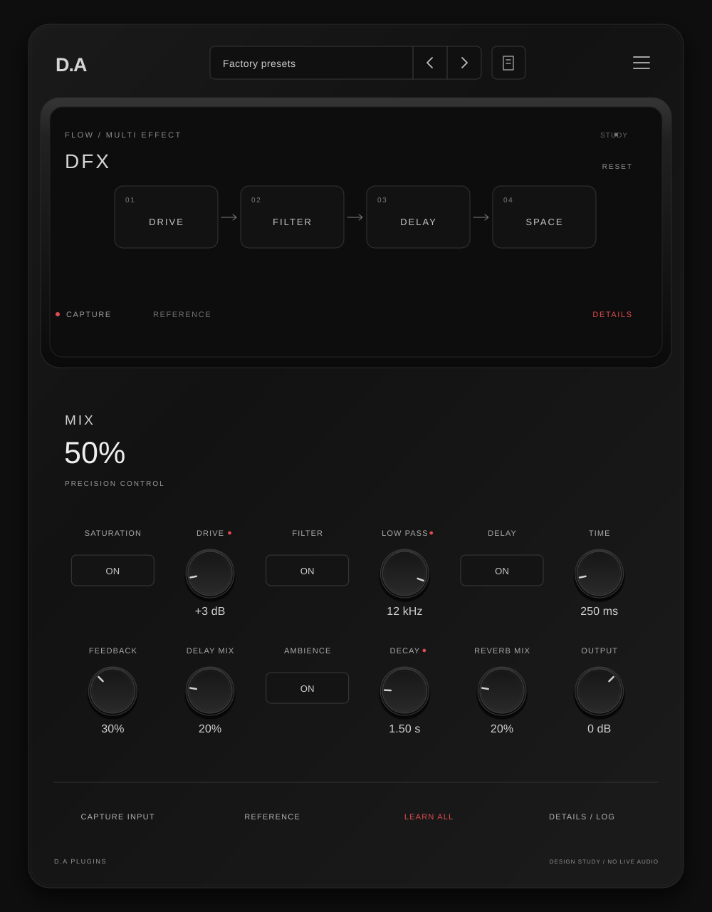

DVerb

هر ده پلاگین با استایل تصویر انتخابشده: مشکی مات، نابهای کوچک، مقدار اصلی عددی و تأکید قرمز بهجای زرد. برای بازکردن SVG اصلی روی طرح کلیک کنید. اینها کانسپت هستند، نه رابط اجرایی.









